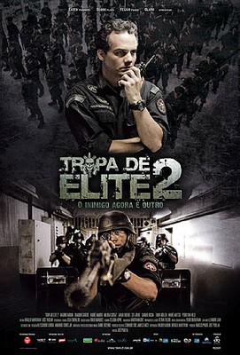

Melhores Filmes da História do Cinema
| Posição | Filme | Ano | Descrição | Trailer |
|---|---|---|---|---|
| 1º | O Auto da Compadecida  |
2000 | As aventuras dos nordestinos João Grilo (Matheus Natchergaele), um sertanejo pobre e mentiroso, e Chicó (Selton Mello), o mais covarde dos homens. Ambos lutam pelo pão de cada dia e atravessam por vários episódios enganando a todos do pequeno vilarejo de Taperoá, no sertão da Paraíba. A salvação da dupla acontece com a aparição da Nossa Senhora (Fernanda Montenegro). Adaptação da obra de Ariano Suassuna. | Assista Aqui |
| 2º | Cidade de Deus |
2002 | Buscapé (Alexandre Rodrigues) é um jovem pobre, negro e muito sensível, que cresce em um universo de muita violência. Buscapé vive na Cidade de Deus, favela carioca conhecida por ser um dos locais mais violentos da cidade. Amedrontado com a possibilidade de se tornar um bandido, Buscapé acaba sendo salvo de seu destino por causa de seu talento como fotógrafo, o qual permite que siga carreira na profissão. É através de seu olhar atrás da câmera que Buscapé analisa o dia-a-dia da favela onde vive, onde a violência aparenta ser infinita. | Assista Aqui |
| 3º | Tropa de Elite |
2007 | Em Tropa de Elite, o dia-a-dia do grupo de policiais e de um capitão do BOPE (Wagner Moura), que quer deixar a corporação e tenta encontrar um substituto para seu posto. Paralelamente dois amigos de infância se tornam policiais e se destacam pela honestidade e honra ao realizar suas funções, se indignando com a corrupção existente no batalhão em que atuam. | Assista Aqui |
| 4º | Central do Brasil |
1998 | Em Central do Brasil, Dora (Fernanda Montenegro) trabalha escrevendo cartas para analfabetos na estação Central do Brasil, no centro da cidade do Rio de Janeiro. Ainda que a escrivã não envie todas as cartas que escreve - as cartas que considera inúteis ou fantasiosas demais -, ela decide ajudar um menino (Vinícius de Oliveira), após sua mãe ser atropelada, a tentar encontrar o pai que nunca conheceu, no interior do Nordeste. | Assista Aqui |
| 5º | Tropa de Elite 2  |
2010 | Nascimento (Wagner Moura), agora coronel, foi afastado do BOPE por conta de uma mal sucedida operação. Desta forma, ele vai parar na inteligência da Secretaria de Segurança Pública do Estado. Contudo, ele descobre que o sistema que tanto combate é mais podre do que imagina e que o buraco é bem mais embaixo. Seus problemas só aumentam, porque o filho, Rafael (Pedro Van Held), tornou-se adolescente, Rosane (Maria Ribeiro) não é mais sua esposa e seu arqui-inimigo, Fraga (Irandhir Santos), ocupa posição de destaque no seio de sua família. | Assista Aqui |
| 6º | O Menino e o Mundo |
2014 | Em O menino e o mundo, um garoto mora com o pai e a mãe, em uma pequena casa no campo. Diante da falta de trabalho, no entanto, o pai abandona o lar e parte para a cidade grande. Triste e desnorteado, o menino faz as malas, pega o trem e vai descobrir o novo mundo em que seu pai mora. Para a sua surpresa, a criança encontra uma sociedade marcada pela pobreza, exploração de trabalhadores e falta de perspectivas. | Assista Aqui |
| 7º | Que Horas Ela Volta?  |
2015 | A pernambucana Val (Regina Casé) se mudou para São Paulo a fim de dar melhores condições de vida para sua filha Jéssica. Com muito receio, ela deixou a menina no interior de Pernambuco para ser babá de Fabinho, morando integralmente na casa de seus patrões. Treze anos depois, quando o menino (Michel Joelsas) vai prestar vestibular, Jéssica (Camila Márdila) lhe telefona, pedindo ajuda para ir à São Paulo, no intuito de prestar a mesma prova. Os chefes de Val recebem a menina de braços abertos, só que quando ela deixa de seguir certo protocolo, circulando livremente, como não deveria, a situação se complica. | Assista Aqui |
| 8º | Hoje Eu Quero Voltar Sozinho |
2014 | Leonardo (Ghilherme Lobo), um adolescente cego, tenta lidar com a mãe superprotetora ao mesmo tempo em que busca sua independência. Quando Gabriel (Fabio Audi) chega na cidade, novos sentimentos começam a surgir em Leonardo, fazendo com que ele descubra mais sobre si mesmo e sua sexualidade. | Assista Aqui |
| 9º | Lisbela e o Prisioneiro  |
2003 | Em Lisbela e o Prisioneiro, Lisbela (Débora Falabella) é uma moça que adora ir ao cinema e vive sonhando com os galãs de Hollywood dos filmes que assiste. Leléu (Selton Mello) é um malandro conquistador, que em meio a uma de suas muitas aventuras chega à cidade de Lisbela. Após se conhecerem eles logo se apaixonam, mas há um problema: Lisbela está noiva. Em meio às dúvidas e aos problemas familiares que a nova paixão desperta, há ainda a presença de um matador (Marco Nanini) que está atrás de Leléu, devido a ele ter se envolvido com sua esposa (Virginia Cavendish). | Assista Aqui |
| 10º | Divaldo - O Mensageiro da Paz |
2019 | Convivendo com a mediunidade desde os quatro anos, Divaldo (Bruno Garcia) era rejeitado pelas outras crianças e reprimido pelo pai (Caco Monteiro). Ao completar 17 anos, o jovem decide usar seu dom para ajudar as pessoas e se muda para Salvador, com o apoio da mãe (Laila Garin). Sob a orientação de sua guia espiritual, Joanna de Ângelis (Regiane Alves), ele se torna um dos médiuns mais importantes de todos os tempos. | Assista Aqui |